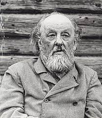
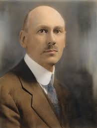
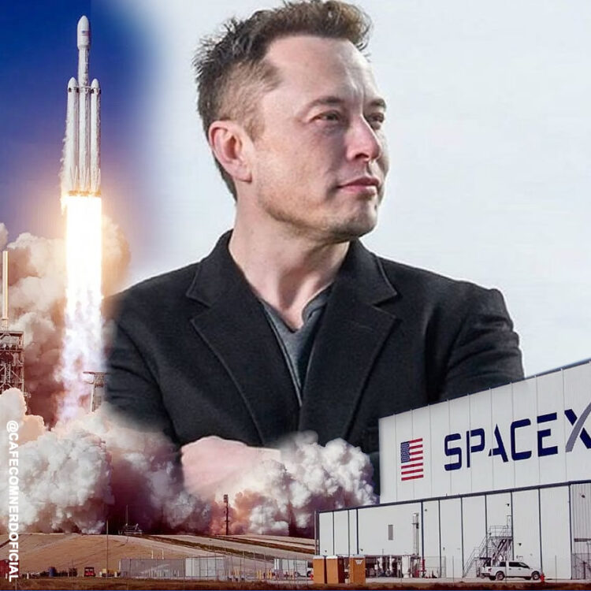
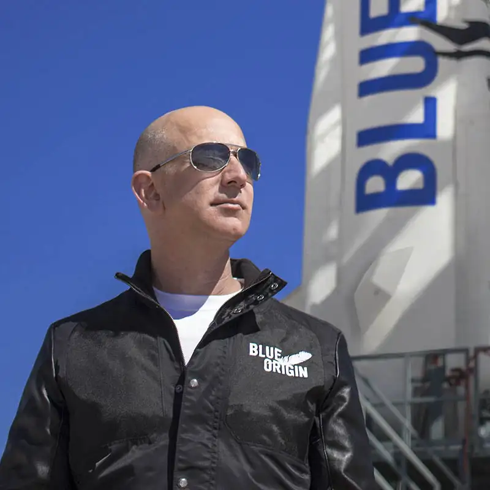
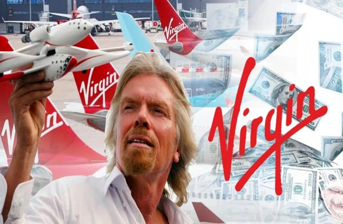
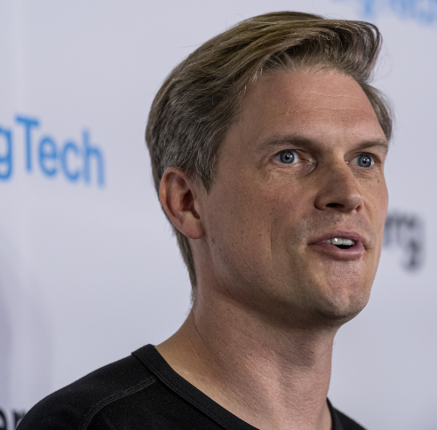
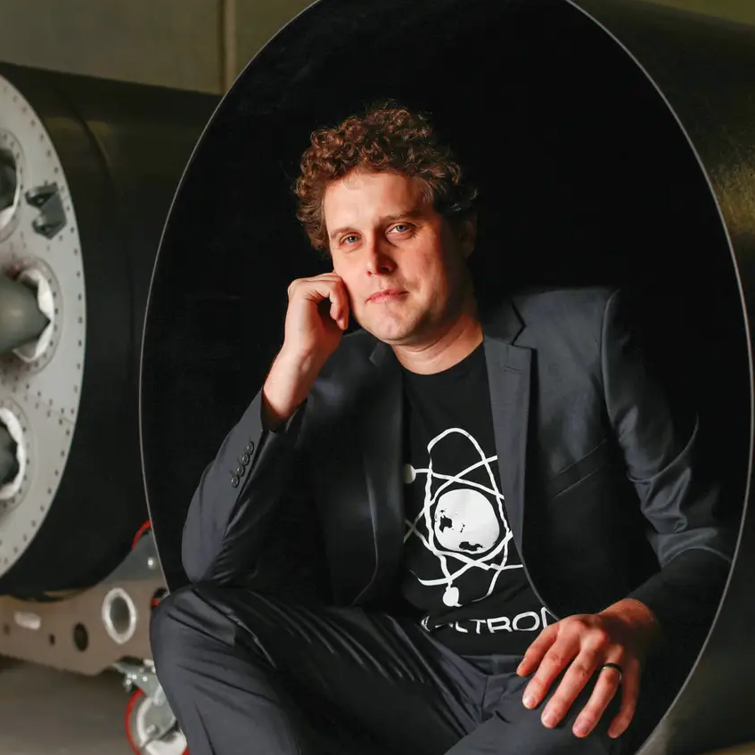

História
A ideia dos foguetes espaciais foi cientificamente concebida por dois físicos: o russo Konstantin Eduard Ziolkowski (1857-1935) e norte-americano Robert Hutschings Goddard (1882-1945). No dia 16 de março de 1926, Goddard lançou o primeiro foguete movido a gasolina e oxigênio líquido. 
Cinco anos mais tarde, no dia 13 de março de 1931, o engenheiro alemão Reinhold Tiling conseguiu patentear uma tecnologia mais tarde redescoberta pela astronáutica: o foguete reutilizável, movido a propelente sólido.
Tiling era um visionário. Seu foguete lançado no dia 31 de março de 1931 atingiu uma altura de quase 300 metros, quando então abriu suas asas para aterrissar suavemente. O engenheiro planejava realizar, via foguete, os serviços de correio entre o continente e as ilhas da Frísia Oriental, no norte da Alemanha.
Empresas
Apesar de relativamente novas, SpaceX, Blue Origin e Virgin Galactic ganharam os holofotes por terem sido criadas por bilionários e entusiastas do setor aeroespacial.
E a disputa pela nova corrida espacial é acirrada. SpaceX, de Elon Musk, e Blue Origin, de Jeff Bezos, se enfrentam na Justiça em briga por contratos e alfinetadas públicas mútuas dos dois bilionários. Boeing e Embraer perderam recentemente mais de 3 mil profissionais para as empresas de Musk e Bezos.
SpaceX
Fundada pelo CEO da Tesla, Elon Musk, a SpaceX surgiu no mercado privado de corrida espacial como pioneira e, mesmo não sendo listada, já tem um valor de mercado de US$ 74 bilhões.
Entre seus feitos está ter sido a primeira empresa privada a completar missões tripuladas e não tripuladas para a Estação Espacial Internacional. Em setembro deste ano, completou a histórica missão da Inspiration4.
Musk tem sido um dos maiores defensores de um pouso humano em terras marcianas.
Blue Origin
Fundada pelo CEO da Amazon, Jeff Bezos, em 2000, a Blue Origin tem exposição a vários subsetores da indústria espacial e também não é listada em bolsa de valores.
Em 20 de julho de 2021, lançou com sucesso a nave New Shepard, que ficou por 10 minutos no espaço.
Assim, se tornou o primeiro voo não pilotado com tripulação totalmente civil (incluindo Bezos).
Virgin Galactic (SPCE)
Listada na Bolsa de Valores de Nova York (NYSE), sob o ticker SPCE, desde 28 de outubro de 2019, a Virgin Galactic foi fundada em 2004 pelo bilionário inglês Richard Branson
Em julho deste ano, Branson ingressou no clube dos bilionários viajantes aos espaço.
Astra Space
Fundada pelo executivo de tecnologia da informação Chris Kemp, em 2006, a Astra Space fornece plataformas de lançamento espaciais para operadoras de satélite de pequeno porte e abriu seu capital em 1 ºde julho de 2021, tornando-se a primeira da categoria a abrir suas ações na Nasdaq sob o ticker ASTRA.
Para isso, se fundiu com a Holicity, uma SPAC que conta com investimentos de nomes como Bill Gates por meio do fundo de patrocínio Pendrell Corp.
RocketLab
Já a norte-americana RocketLab foi fundada em 2006 por Peter Back, engenheiro da Nova Zelândia. É listada na Nasdaq, sob o ticker RKLB desde agosto de 2021, quando abriu capital após fusão com a SPAC Vector Acquisition.
Seu foguete Electron é o segundo mais frequentemente lançado nos EUA anualmente, com missões de sucesso entregues para operadores de satélite comerciais e governamentais.
Propósito
Um foguete espacial é um meio de transporte para levar astronautas, equipamentos e satélites para a órbita da Terra (ou fora dela, no espaço). Para cumprir esse propósito, a nave precisa de um motor a jato.
É que não tem oxigênio no espaço, então não dá para usar motores convencionais. Para contornar isso, os combustíveis carregam seu suprimento de oxigênio. Sem isso, não rolaria a combustão. E a nave ficaria no lugar.
Foguetes
Existem três tipos de foguete, classificados de acordo com o tipo de combustível usado. São eles:
Foguete de combustível sólido
Pó compactado com uma mistura de combustíveis secos e oxidantes fortes, capazes de liberar muito oxigênio na combustão;
Foguete de combustível líquido
Câmaras separam combustíveis dos oxidantes, que só se misturam na ignição (quando “ligam” o foguete). Os mais usados são hidrazina e hidrogênio líquido.
Foguete de combustível híbrido
Os combustíveis e os oxidantes ficam em câmaras separadas e em estados diferentes (líquido/sólido ou gasoso/sólido).
Utilidade dos foguetes para a sociedade
Esse tipo de operação tem grande importância para a exploração espacial, para a pesquisa em Astronomia, para as telecomunicações e também para o desenvolvimento de novos sistemas de navegação, propulsão, entre outros. Os foguetes são usados para levar astronautas e equipamentos para a órbita da Terra ou além.
Foguetes Starships
A arquitetura completa do veículo inclui ambos veículos de lançamento e espaçonave que se destinam a substituir completamente todos o hardware espacial da SpaceX no início da década de 2020, bem como a infraestrutura terrestre para o rápido lançamento e relançamento, e tecnologia de transferência de combustíveis em gravidade zero, para ser implantado em órbita baixa da Terra (LEO). A grande carga útil para a órbita da Terra é de até de 150 000 kg o que faz Starship um super heavy-lift veículo de lançamento.
Incluindo capacidades para suportar voos espaciais de longa duração em ambiente cislunar e de transporte a Marte.
O veículo ITS tinha sido projetado com diâmetro central de 12m,[4] enquanto o projeto do Starship foi reduzido para 9m, levando apenas metade da carga até LEO com apenas 42 % do empuxo de decolagem.
Metodologias
Projeto do Foguete
1 - Objetivo Específico:
Desenvolver um foguete de pequeno porte capaz de realizar lançamentos suborbitais para experimentos científicos.
2 - Metas Mensuráveis:
- Alcançar uma altitude mínima de 100 km.
- Implementar um sistema de recuperação do foguete para reutilização.
- Capacidade de transportar uma carga útil de até 50 kg.
- Alcançar uma precisão de pouso de +/- 1 km.
3 - Viabilidade:
- Avaliar a disponibilidade de recursos financeiros e técnicos para o projeto.
- Verificar a experiência e conhecimento da equipe envolvida.
- Considerar as regulamentações e licenças necessárias para lançamentos suborbitais.
4 - Relevância:
- Garantir que o projeto esteja alinhado com os objetivos científicos e educacionais da organização.
- Estabelecer parcerias com instituições de pesquisa e universidades para a realização de experimentos científicos.
5- Cronograma:
- Fase 1: Projeto e simulação - 6 meses.
- Fase 2: Fabricação e montagem do foguete - 8 meses.
- Fase 3: Testes de solo e integração de sistemas - 2 meses.
- Fase 4: Testes de voo e aprimoramento do desempenho - 6 meses.
- Fase 5: Lançamento inicial e iterações futuras - contínuo.
Divulgação do projeto do foguete
1- Específico:
a. Divulgar o lançamento bem-sucedido do foguete desenvolvido, destacando suas características únicas e realizações científicas.
2 - Mensurável:
a. Alcançar uma cobertura de mídia ampla com reportagens em pelo menos cinco veículos de comunicação.
b. Obter um mínimo de 10.000 visualizações em um vídeo de divulgação do lançamento nas plataformas online.
c. Atingir uma taxa de engajamento de 5% nas postagens de mídia social relacionadas ao foguete.
3 - Atingível:
- Estabelecer parcerias com agências espaciais, universidades e instituições de pesquisa para aumentar a visibilidade do foguete.
- Desenvolver um plano de mídia e orçamento adequado para alcançar os objetivos de divulgação.
4 - Relevante:
a. Destacar as contribuições científicas do foguete, enfatizando os experimentos e pesquisas realizados durante o voo suborbital.
b. Mostrar como o desenvolvimento do foguete se alinha com os avanços científicos e tecnológicos da indústria aeroespacial.
5 - Temporal:
a. Iniciar a divulgação dois meses antes do lançamento programado.
b. Realizar uma coletiva de imprensa uma semana após o lançamento para compartilhar os resultados e descobertas científicas
Inspiração para o foguete
O Satellite Launch Vehicle ou SLV foi um projeto iniciado no começo de 1970 pela Organização Indiana de Pesquisa Espacial para desenvolver a tecnologia necessária para o lançamento de satélites. O projeto foi liderado por APJ Abdul Kalam. O SLV foi destinado a atingir uma altura de 400 km e levar uma carga de 40 kg. Era um foguete de quatro estágios com todos os motores de propelente sólido.
O primeiro lançamento do SLV ocorreu em Sriharikota em 10 de agosto de 1979. O último lançamento do SLV ocorreu em 17 de Abril de 1983.